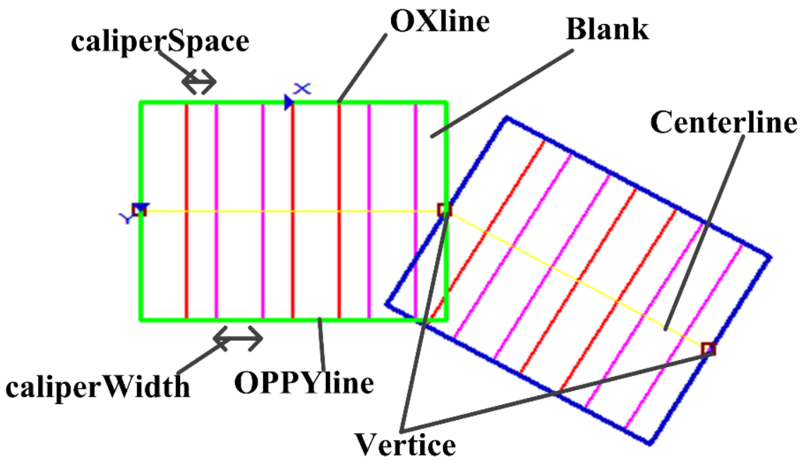

Biểu diễn lớp điều khiển GUI cho đường gấp khúc (Trendline), tức là thành phần đồ họa có thể quan sát được trong Viewport. Lớp này bao bọc (encapsulate) kiểu dữ liệu scTrendlineCaliper bên trong để thuận tiện cho việc hiển thị và tương tác trên hình ảnh, ví dụ như vùng biên độ rộng dạng đường gấp khúc của công cụ kiểm tra độ rộng biên (tương ứng với loại kiểm tra độ rộng biên là Đường gấp khúc trong thanh thuộc tính), hoặc vùng huấn luyện hạt (bead) dạng đường gấp khúc của công cụ theo dõi hạt.

| Phân loại | Tên Interface | Mô tả Interface |
|---|---|---|
| Constructor | scGuiTrendline | scGuiTrendline () Hàm khởi tạo mặc định. |
| Hàm | GetTrendlineCaliper | Lấy Caliper đường gấp khúc (Trendline Caliper). |
| SetTrendlineCaliper | Thiết lập Caliper đường gấp khúc (Trendline Caliper). | |
| GetPolyline | Lấy vùng đường gấp khúc (Polyline). | |
| SetPolyline | Thiết lập vùng đường gấp khúc (Polyline). | |
| GetYlength | Lấy chiều cao đường gấp khúc (Chiều dài cạnh OY). | |
| SetYlength | Thiết lập chiều cao đường gấp khúc (Chiều dài cạnh OY). | |
| GetCaliperWidth | Lấy chiều rộng Caliper. | |
| SetCaliperWidth | Thiết lập chiều rộng Caliper. | |
| GetCaliperSpace | Lấy khoảng cách (Spacing) giữa các Caliper. | |
| SetCaliperSpace | Thiết lập khoảng cách (Spacing) giữa các Caliper. | |
| GetCaliperID | Lấy ID của Caliper. | |
| SetCaliperID | Thiết lập ID của Caliper. | |
| GetSearchDirection | Lấy hướng tìm kiếm (Search Direction) của Caliper. | |
| SetSearchDirection | Thiết lập hướng tìm kiếm (Search Direction) của Caliper. | |
| GetCaliperNum | Lấy số lượng Caliper. |
Tính năng: Khởi tạo đối tượng scGuiTrendline.
Tham số: Không.
Giá trị trả về: Không.
Tính năng: Lấy Caliper đường gấp khúc (Trendline Caliper).
Tham số: Không.
Giá trị trả về: Caliper đường gấp khúc, kiểu scTrendlineCaliper.
Tính năng: Thiết lập Caliper đường gấp khúc (Trendline Caliper).
Tham số:
Giá trị trả về: Kiểu bool, cho biết thiết lập có thành công hay không..
Tính năng: Lấy vùng đường gấp khúc (Polyline).
Tham số: Không.
Giá trị trả về: Vùng đường gấp khúc (Polyline), kiểu scPolyline.
Tính năng: Thiết lập vùng đường gấp khúc (Polyline).
Tham số:
Giá trị trả về: Không.
Tính năng: Lấy chiều cao đường gấp khúc (Chiều dài cạnh OY).
Tham số: Không.
Giá trị trả về: Chiều cao đường gấp khúc (Chiều dài cạnh OY), kiểu số thực (float).
Tính năng: Thiết lập chiều cao đường gấp khúc (Chiều dài cạnh OY).
Tham số:
Giá trị trả về: Kiểu bool, cho biết thiết lập có thành công hay không.
Tính năng: Lấy chiều rộng Caliper.
Tham số: Không.
Giá trị trả về: Chiều rộng Caliper, kiểu nguyên.
Tính năng: Thiết lập chiều rộng Caliper.
Tham số:
Giá trị trả về: Kiểu bool, cho biết thiết lập có thành công hay không.
Tính năng: Lấy khoảng cách (Spacing) giữa các Caliper.
Tham số: Không.
Giá trị trả về: Khoảng cách giữa các Caliper, kiểu nguyên.
Tính năng: Thiết lập khoảng cách (Spacing) giữa các Caliper.
Tham số:
Giá trị trả về: Kiểu bool, cho biết thiết lập có thành công hay không.
Tính năng: Lấy ID của Caliper.
Tham số: Không.
Giá trị trả về: ID của Caliper, kiểu nguyên.
Tính năng: Thiết lập ID của Caliper.
Tham số:
Giá trị trả về: Kiểu bool, cho biết thiết lập có thành công hay không.
Tính năng: Lấy hướng tìm kiếm (Search Direction) của Caliper.
Tham số: Không.
Giá trị trả về: Hướng tìm kiếm của Caliper, kiểu nguyên.
Tính năng: Thiết lập hướng tìm kiếm (Search Direction) của Caliper.
Tham số:
Giá trị trả về: Kiểu bool, cho biết thiết lập có thành công hay không.
Tính năng: Lấy số lượng Caliper.
Tham số: Không.
Giá trị trả về: Số lượng Caliper, kiểu nguyên.
Không
```python ROI_Line1 = GvTool.GetToolData(“边宽检测工具_013.线边宽区域”) rectex = ROI_Line1.GetRectEx() po = rectex.GetOriginPoint() Px = rectex.GetCornerPx() Py = rectex.GetCornerPy() Popp = rectex.GetCornerPopp()
print(po.GetX(),po.GetY()) print(Px.GetX(),Px.GetY()) print(Py.GetX(),Py.GetY()) print(Popp.GetX(),Popp.GetY()) ```